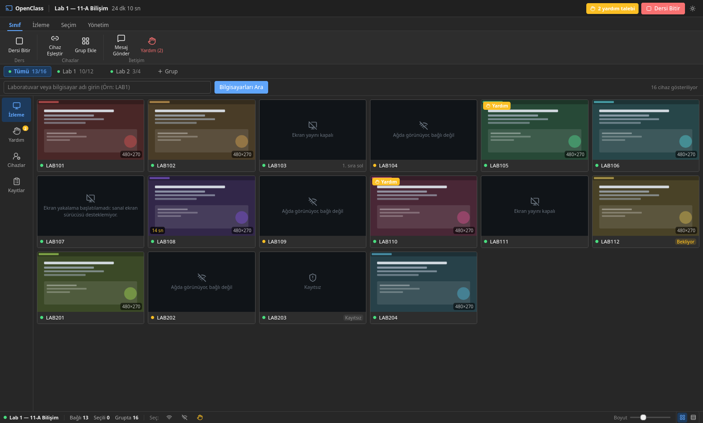
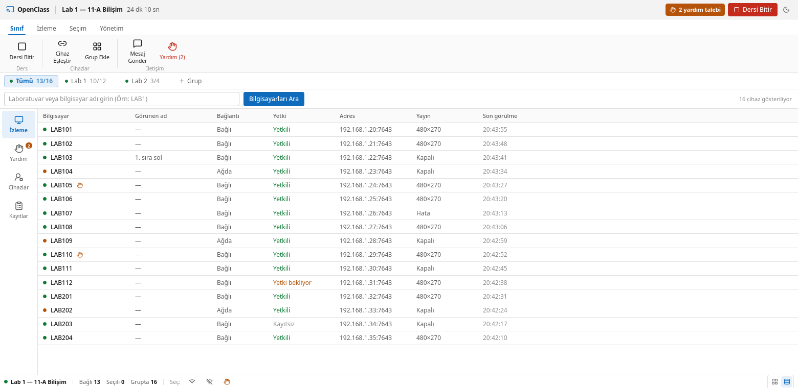
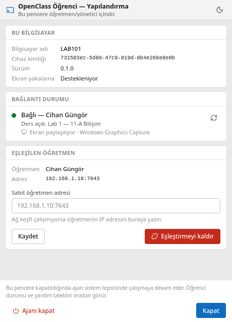

Bilgisayar laboratuvarları için · Açık kaynak
OpenClass, NetSupport School'a ücretsiz ve açık kaynak bir alternatif. Öğretmen, yerel ağdaki öğrenci bilgisayarlarını tek pencereden izler, kontrol eder ve yönetir — sunucu, internet veya abonelik olmadan.
Özellikler
İki küçük uygulama: öğretmen konsolu ve öğrenci ajanı. Yerel ağda otomatik birbirini bulur, güvenli biçimde bağlanır.
Nasıl çalışır
Hepsi okulun kendi yerel ağında — kurulum dosyası, bulut hesabı veya lisans anahtarı yok.
Arayüz
Öğretmen konsolu hem gündüz derslerine hem karanlık ortamlara uyum sağlar.



Windows için hazır kurulumsuz programlar. Sunucu kurulumu, hesap ve abonelik yok.
Öğretmen ve öğrenci programlarını ayrı ayrı indirin:
Hakkında
Okullar sınıf yönetimi için pahalı ve kapalı lisanslara mahkûm olmasın. OpenClass, gizli izleme olmadan yalnızca sınıfın işini gören kontrolleri sunar: ekran paylaşımı her zaman öğrenciye görünürdür, klavye izleme şeffaftır. Yerel ağda çalıştığı için internet bağlantısına ve harici hizmetlere bağımlı değildir.